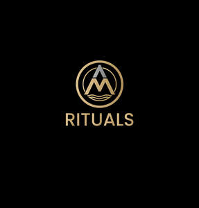

Trade Mark Journal No.2025/016 18 April 2025
UK00004184138 3 April 2025 (44)

- Class 44
- Hajima Cupping, Wet Cupping; Beauty salon services; Salon services (Beauty -); Services of a hair and beauty salon; Beauty spa services; Salon services (Hairdressing -); Hairdressing salon services; Hair salon services; Beauty salons; Salons (Beauty -); Beauty treatment services; Beauty therapy services; Beauty care services; Nail salon services; Slimming salon services; Beauty consultancy services; Hair salon services for women; Facial beauty treatment services; Skin care salon services; Hair salon services for men; Hair dressing salon services; Hairdressing services; Beautician services; Hygienic and beauty care services; Airbrush tanning salon services; Spa services; Haircare services; Sun tanning salon services; Tanning (Sun -) salon services; Hair salon services for military service members; Spray tanning salon services; Beauty treatment services especially for eyelashes; Manicure services; Cosmetician services; Salons (Hairdressing -); Hairdressing salons; Hair styling services; Provision of hygienic and beauty care services; Make-up services; Beauty consultancy; Pedicure services; Aesthetician services; Consultation services relating to beauty care; Services for the care of the hair; Hair care services; Barber services; Services of a barber; Beauty care; Trichology services; Medical spa services; Cosmetic make-up services; Manicuring services; Advisory services relating to beauty treatment; Beauty treatment; Pedicurist services; Hair restoration services; Beauty counselling; Hair treatment services; Manicure and pedicure services; Hair tinting services; Microdermabrasion services; Dermatology services; Micropigmentation services; Barber shop services; Massage services; Hair perming services; Services of a make-up artist; Hair highlighting services; Home-visit manicure services; Hair braiding services; Rental of machines and apparatus for use in beauty salons or barbers' shops; Beauty therapy treatments; Cosmetic body care services; Skin care salons; Nail care services; Hygienic and beauty care; Hair colouring services; Hair weaving services; Rental of equipment for human hygiene and beauty care; Aromatherapy services; Solarium services; Hair coloring services; Cosmetic dentistry services; Facial treatment services; Make-up application services; Cosmetic facial and body treatment services; Cosmetic treatment services for the body, face and hair; Services for the care of the scalp; Personal hair removal services; Hair straightening services; Hair dyeing services; Hair curling services; Permanent makeup services; Services for the care of the skin; Cupping therapy; Cupping therapy services; Acupressure therapy; Physiotherapy [physical therapy]; Hot stone massage therapy services; Electro therapy services for physiotherapy; Therapy services; Therapeutic treatment of the face; Massage; Therapeutic treatment of the body; Depilatory waxing; Body waxing services for hair removal in humans; Waxing services for the removal of hair from the human body; Tanning salon and solarium services; Light therapy services.
Atmirald Alshabani